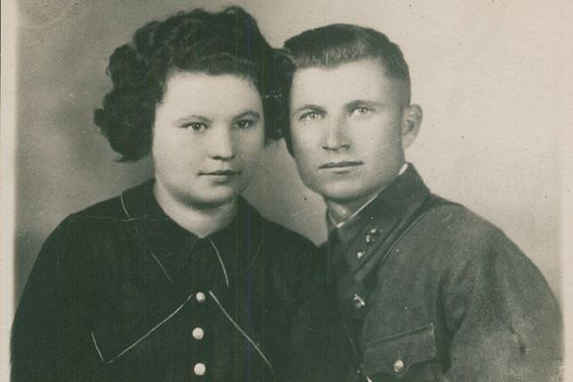

La route vers la Victoire de la Seconde Guerre mondiale fut d’une difficulté terrible, et les initiatives pour la paix ont par la suite été menées dans le monde entier. Depuis notre enfance, nous entendons des histoires sur les exploits des soldats soviétiques sur les champs de bataille, mais il existe encore de nombreux actes héroïques, mettant en avant le courage et l'honneur qui sont ignorés de l’homme de la rue. Ces histoires sont extrêmement importantes, car la contribution des héros à la victoire sur l'Allemagne fasciste est inestimable. Peu importe que ces héros soient des militaires, des travailleurs à l’arrière du front ou des partisans.
L'une de ces histoires peu connues est celle du partisan soviétique Evgeny Dotsenko, qui, en 1942, a rejoint le mouvement de Résistance belge et a donné sa vie pour la la paix d’un pays qui n’est pas le sien.
Né le 17 novembre 1911, Evgeny Josifovich est originaire de Stalingrad. Au tout début de la Grande Guerre patriotique, le commissaire politique de la 99e division d'infanterie Dotsenko, a été encerclé avec ses compagnons d’arme, blessé, puis envoyé vers l’Allemagne. Travailler au profit de l’ennemi, mourir de faim ou d’épuisement, tel était le sort réservé au héros soviétique.

Yevgeny Dotsenko et son épouse enceinte Lyudmila, séparés au début de la guerre, ils ne se reverront jamais
Cependant, le destin sourit à Evgueni : durant sa captivité, il a rencontré Grigory Lehrman, qui avait besoin d'un « compagnon fort et fiable » pour s'évader. L'idée de retourner dans son pays natal via la Suisse est venue à Lehrman, mais il était impossible de se rendre seul en Union soviétique. Les prisonniers ont échafaudé un projet d’évasion. Ils sont parvenus à scier les barreaux de la cellule et à franchir la grille du camp. C’est ainsi, à l'été de 1942, après un an d’emprisonnement, Dotsenko et son camarade s'échappent de ldu camp de prisonnier.
Le chemin des fugitifs devait passer par la Suisse, puis l'Angleterre, au départ de laquelle les soldats de l'Armée rouge prévoyaient d'arriver à Mourmansk, ville aux mains des soviétiques, à bord de navires d'aide humanitaire. Pendant longtemps, Lerman et Dotsenko ont dû se cacher sur le territoire allemand, se déplacer uniquement la nuit, de préférence – dans les forêts, moins souvent à découvert, afin de trouver de la nourriture. Il est difficile d'imaginer exactement comment deux hommes jeunes non armés ont réussi à survivre en zone ennemie et ce qu'ils ont dû surmonter. La guerre dictait sa loi : même les civils en Allemagne devaient craindre la surveillance et les dénonciations. Que dire alors de deux fugitifs sans papiers, vêtus de vêtements sales et usés. Après quelques semaines d’errance, de vie de braconnier et de risques incessants, Dotsenko et Lehrman sont arrivés dans les Ardennes belges. Par hasard, le chemin étant complètement différent
Yevgeny Dotsenko chez les Belges qui l'ont hébergé - Léon et Georges AmuarIl est également intéressant de noter que la population belge était dans sa grosse majorité opposée à l’occupation et que la collaboration de certains concitoyens était fort mal vue. Grâce aux patriotes locaux qui, au risque de leurs vie, ont abrité des prisonniers de guerre évadés, Evgueni et Grigori ont rejoint les mouvements de résistance armée. Dans l’impossibilité de rejoindre la Patrie, ils ont décidé de combattre l'Allemagne en Belgique, et contribuer à la cause universelle : la victoire sur l’ennemi ! Devenus des combattants du mouvement de Résistance, Dotsenko et Lehrman ont formé une compagnie, Evgueny Josifovich étant son commissaire.
Après avoir rejoint le régiment de partisans, Dotsenko et Lerman ont commencé à participer à des sabotages : dynamitage de ponts, sabotage des voies ferrées et incendies volontaires. Ces actes de résistance derrière les lignes ennemies étaient tellement efficaces a lancé une offre de récompense de cinq cent mille francs belges pour qui aiderait à neutraliser Evgueni Dotsenko… lequel, malgré cette nouvelle menace, a continué le combat.
Cependant, de nombreuses histoires héroïques se terminent de manière brusque et tragique. En mars 1944, un peu plus d'un an avant la Victoire, Dotsenko est allé rencontrer deux prisonniers russes des mines. Avant d'atteindre la forêt près de la rivière Amblève, il est tombé sur une patrouille de quatre allemands. Il n'y avait pratiquement aucune chance de s'échapper ou de se réfugier. Georges Hamoir (résistant, qui, avec sa femme, abritaient Dotsenko et Lerhman dans une maison leur appartenant) a rappelé: «Nous avons entendu ces coups de feu. Nous avons dressé une plaque commémorative à l’endroit où il est tombé.. »
La mémoire du héros partisan soviétique Dotsenko est un lien entre la Russie et la Belgique. Evgueni Josifovich est devenu le symbole du jumelage entre la ville de Liège et de Volgograd. Ses cahiers intimes, qu'Evgeny Josifovich tenait depuis son évasion, confirment le fait que toutes les histoires de courage n'ont pas encore été exprimées et combien reste-t-il dans les coulisses de l'histoire. Et cette mémoire qui nous a déjà été donnée est la chose la plus importante qui nous relie au passé héroïque de nos compatriotes.
Du côté de Sprimont (province de Liège), à proximité immédiate de Comblain-au-Pont, à 120 km au sud-est de Bruxelles), sur un lieu privé difficilement accessible en bord d’Amblève, a été érigé un monument en hommage à E.I. Dotsenko, commissaire soviétique et membre de la Résistance.
Photo du monument en 1945, tout de suite après son érection
Ce monument a été construit au lendemain de la guerre par des partisans soviétiques et des habitants de la région à l’endroit précis où leur camarade de combat fut abattu par une patrouille allemande (pour plus de détails sur cette histoire, voir l’article de V. Chliakhterman « Les Russes dans les Ardennes » et le site de S.V.Dybov).
Le monument représente un bouclier en béton avec une étoile à cinq branches sur le dessus.
Y figure l’inscription suivante en langue russe :
« Tu es tombé dans la lutte contre le fascisme
Notre Patrie ne t’oubliera pas !
Nous te vengerons!
Gloire à toi, Evgueni Dotsenko ! »
Arbre Dotsenko (Bois de Stepennes)
Au Bois de Stepennes, à proximité d’Anthisnes (province de Liège) se trouve un monument original dénommé « Arbre Dotsenko ».
Des unités de la Résistance belge, comprenant un nombre significatif de partisans soviétiques, combattirent à cet endroit durant la Seconde Guerre mondiale dont Evgeni Dotsenko était un des plus célèbres. Une des bases des maquisards se trouvait au Bois de Stepennes. Aux moments de relâche, certains combattants soviétiques y gravaient leurs noms au canif sur les arbres. Un de ces arbres fut déplanté en 1975 et envoyé à Volgograd, où il est toujours exposé au Musée d’Histoire de « la Bataille de Stalingrad ».
À sa place a été érigé le monument actuel, qui représente un moulage d’une partie du tronc s’élevant sur un piédestal en pierre.
Sur cette copie en béton, on peut voir la faucille et le marteau gravé par E. Dotsenko, une étoile à cinq branches, ainsi que les lettres « ED (que l’on imagine représenter les initiales de E. Dotsenko) IGSA AN ».
Une plaque est fixée sur le piédestal avec l’épitaphe suivante en français : «Aux résistants belges, partisans russes, soldats américains ayant combattu pour la liberté à Anthisnes qui se souvient 1940 – 1945 - 1975».
Lucien Delrée (1913-1997) est un des auteurs belges du projet.
D’autres autographes réalisés par des partisans soviétiques et leurs camarades de combat sont visibles sur certains arbres qui continuent à croître autour de la clairière.
A.A.P.
NOTES ET RÉFÉRENCES
1. Document du ministère de la Défense et l’article « Histoire militaire de mon cousin » par Shulamith Lerman dans le journal « le Messager » (http://www.vestnik.com/issues/2000/1121/win/lerman.htm
2. Article de Vladimir Volodina dans le journal « le Mot hébreu » (Володин В. // Еврейское Слово // №22(195), 2004 // Режим доступа: https://web.archive.org/web/20120702121446/http://www.e-slovo.ru/574.html)
3. Article de V.I. Chiakhterman, « les Russes dans les Ardennes » dans la « Revue militaire indépendante » (https://nvo.ng.ru/wars/2015-07-24/12_belgium.html).
4. http://www.revuemethode.org/m061924.html
Pour plus d’informations sur Evgueni DOTSENKO nous recommandons de retrouver l’article de notre ami Jean-Louis ETIENNE intitulé « Le Commandant Dotsenko et le Régiment des Immortels » dans le numéro de « Méthode » de juin 2019.

Partager cette page